🤖 Correspondance Yeux & Expressions pour It bobd 👁️
Ce tableau établit une correspondance visuelle précise entre les expressions émotionnelles de It bobd et les états de ses yeux générés spécifiquement pour chaque situation.
Tableau de Correspondance Détaillé
| Catégorie | Expression | Emoji | Aperçu des Yeux | État Technique | Description Visuelle |
|---|---|---|---|---|---|
| MOTEUR & TEMPÉRATURE | Moteur froid | 🥶 | 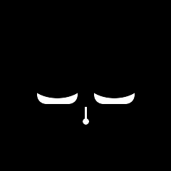 | COLD | Yeux affaissés, somnolents, avec une goutte au nez. |
| Surchauffe moteur | 🥵 | 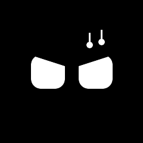 | OVERHEAT | Yeux froncés avec gouttes de sueur sur le côté. | |
| Démarrage réussi | 😊 |  |
HAPPY | Yeux souriants (partie basse masquée). | |
| Moteur cale | 😱 | 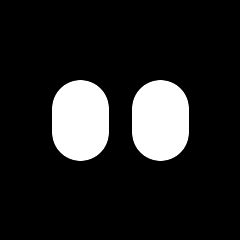 | SHOCKED | Yeux très hauts et arrondis, grands ouverts. | |
| CONDUITE | Accélération brutale | 😎 | 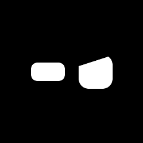 | EXCITED (Asymétrique) | Un oeil fin et un oeil froncé (Angry). |
| Freinage d'urgence | 😨 | 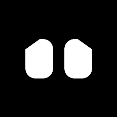 | SCARED | Grands yeux avec coins extérieurs tombants. | |
| Accélérations successives | 🤢 | 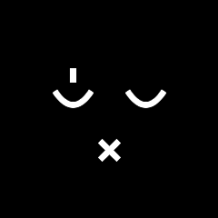 | NAUSEOUS | Yeux en arc vers le bas, bouche en croix, sueur. | |
| Conduite douce | 😌 | 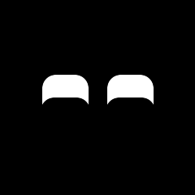 | ZEN (Happy) | Sérénité (reprend le style Happy). | |
| Virage serré | 😬 | 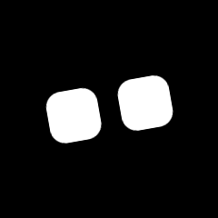 | LEANING | Yeux inclinés pour simuler la force latérale. | |
| Vitesse excessive | 😵💫 | 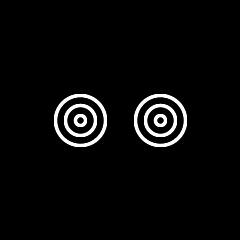 | DIZZY | Cercles concentriques (effet spirale). | |
| MAINTENANCE | Sonde Lambda sale | 😷 | 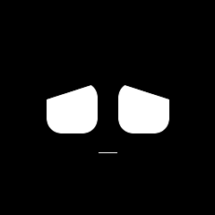 | COUGHING (Animé) | Animation de toux avec bouche qui s'ouvre. |
| Niveau huile bas | 😩 | 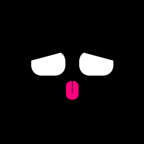 | THIRSTY | Yeux tombants avec langue rose vif. | |
| Pression pneus faible | 😟 | 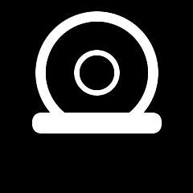 | FLAT TIRE (Icône) | Icône technique d'une roue dégonflée. | |
| Réservoir vide | 😫 | 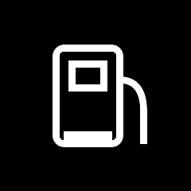 | FUEL LOW (Icône) | Icône de réservoir avec niveau bas. | |
| Batterie faible | 😴 | 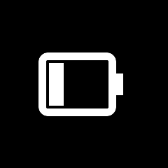 | BATTERY LOW (Icône) | Icône de batterie faible. | |
| Freins usés | 😨 | 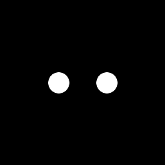 | SMALL ROUND | Petits yeux ronds et fixes. | |
| Filtre à air sale | 😮💨 | 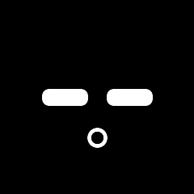 | SHORT BREATH | Yeux bas et bouche en "O" (essoufflé). | |
| SÉCURITÉ | Obstacle proche | 🚨 | 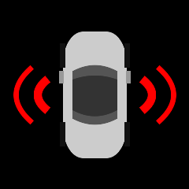 | CAR OBSTACLE (Icône) | Voiture vue de haut avec signaux de proximité rouges. |
| Distance sécurité | 😟 | 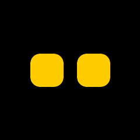 | DISTANCE WARNING | Yeux standard de couleur jaune. | |
| Ceinture non mise | 😒 | 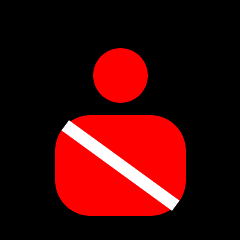 | SEATBELT (Icône) | Icône de passager barrée en rouge. | |
| Vitesse limitée | 👮♀️ | 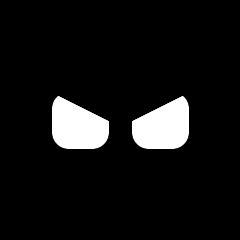 | ANGRY | Réprimande (regard froncé). | |
| Check engine | 🤒 | 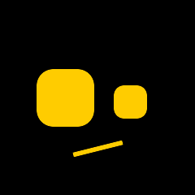 | ENGINE SICK | Yeux asymétriques et bouche inclinée (Jaune). | |
| ABS activé | 🔬 | 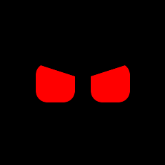 | ABS ACTIVE | Regard froncé de couleur rouge. | |
| INTERACTIONS | Conducteur énervé | 🥺 | 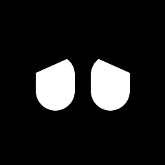 | PLEADING | Grands yeux de manga pour apaiser. |
| Conduite agressive | 🤨 | 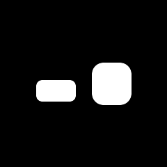 | JUDGING | Un oeil plissé et un oeil ouvert (sourcil levé). | |
| Conducteur fatigué | 🚨 | 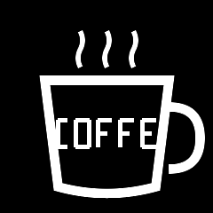 | COFFEE (Icône) | Icône de tasse de café agrandie. | |
| Musique forte | 🎶 | |
HAPPY | Yeux souriants. | |
| Longue route | 😴 | 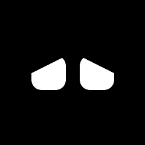 | TIRED | Ennui/Somnolence. | |
| ÉTATS VÉHICULE | Voiture propre | ✨ | 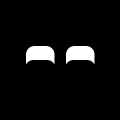 | PROUD (Animé) | Yeux souriants avec étoiles. |
| Coffre ouvert | 😮 | SHOCKED | Yeux grands ouverts (Surpris). | ||
| Porte ouverte | ⚠️ | ANGRY | Alerte. | ||
| Phares allumés de jour | 🤔 | JUDGING | Confus. | ||
| Essuie-glaces sans pluie | 🤷♀️ | JUDGING | Perplexe. | ||
| SOCIAL | Embouteillage | 😑 | TIRED | Ennui profond. | |
| Doublé | 😒 | ANGRY | Vexé. | ||
| Klaxon reçu | 😲 | 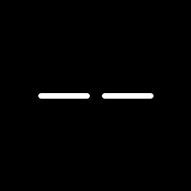 | BLINK | Sursaut. | |
| Salut | 👋 | |
HAPPY | Amical. | |
| Priorité grillée | 😡 | ANGRY | Colère. | ||
| Stationnement réussi | 🏆 | |
HAPPY | Célébration. | |
| Stationnement raté | 🤦♀️ | TIRED | Honte. | ||
| SPÉCIAL | Nouveau passager | 👋 | |
HAPPY | Accueillant. |
| Anniversaire | 🥳 | |
HAPPY | Fête. | |
| Destination atteinte | 😊 | |
HAPPY | Soulagement. | |
| Panne imminente | 🆘 | ANGRY | Panique. | ||
| Révision passée | ✅ | |
HAPPY | Validé. |